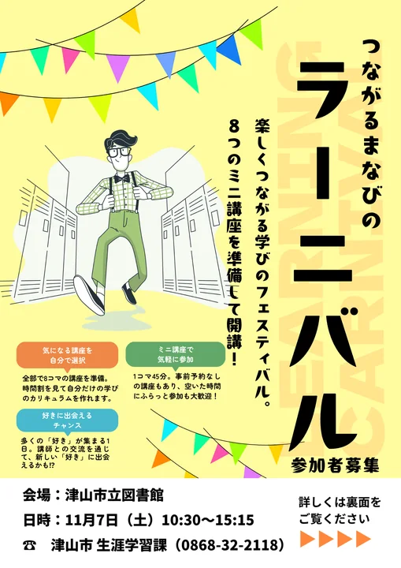

「AIって、私には難しそう」
と思っていたのは、私自身でした。
2018年に学校での仕事を退職し、2020年からWeb制作を学び始めました。
63歳で生成AIの学びを本格化し、2024年4月にはAI画像制作の仕事を初めて受注。5日間で165枚の画像を制作しました。
その後は画像を作る仕事だけでなく、AIの使い方を伝える活動へと仕事の幅を広げ、2024年9月からAI講師としての活動を始めました。
現在はAI講師・AIクリエイターとして、自治体・企業・福祉事業所などで講座を行っています。
私も、最初からAIを使いこなせたわけではありません。専門用語や新しいツールに戸惑いながら、実際に手を動かし、一つずつできることを増やしてきました。
自分自身が60代から学び始めたからこそ、初めてAIに触れる方が、どこでつまずき、何を不安に感じるのかが分かります。
「わからない」を笑わず、その人のペースで一緒に進む。それが私の支援の原点です。
— 三谷小百合（さゆっち）